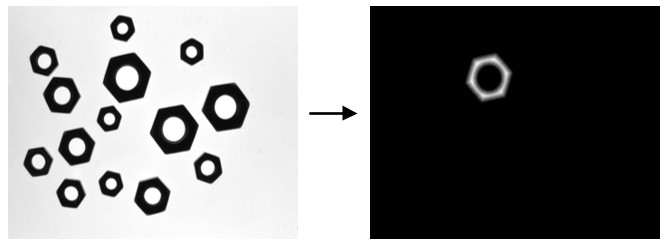

|
类型 |
区域运算 | ||||||||
|
描述 |
计算区域或区域列表中每一个点到区域边界的距离并生成相应的距离图 | ||||||||
|
语法 |
ZV_ReDistTrans(re,img,width,height,type)
参数： re：ZVOBJECT类型，区域或区域列表 img：ZVOBJECT类型，生成的距离图，单通道8U类型，输出参数 width：生成图像的宽，范围[1,32766] height：生成图像的高，范围[1,32766] type：距离类型，如下
| ||||||||
|
适用控制器 |
支持ZV功能或者5系列以上的控制器 | ||||||||
|
例子 |
 ZVOBJECT img,mask,re,re_connect_list,re_connect ZV_ImgRead(img,"region2.png",0) '以原图像格式读取图片 ZV_ReGenFullImage(img,mask) '生成的覆盖全图的区域掩膜 ZV_ReThresh(img,mask,re,0,150) '区域二值化 ZV_ReConnect(re,re_connect_list) '计算区域的连通区域
ZVOBJECT re_connect,dst ZV_ObjSelect(re_connect_list,re_connect,3) '获取列表中序号为3的元素 ZV_ReDistTrans(re_connect,dst,640,480,2)'生成区域的距离图
|